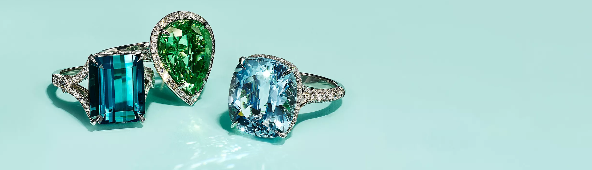
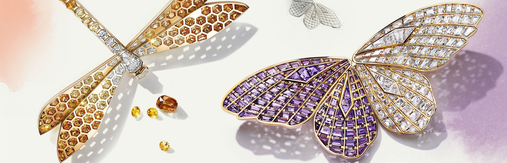

Tiffany & Prism Foundation
The Tiffany & Prism Foundation seeks to preserve the world’s most treasured seascapes and landscapes.
Since 2022, the Foundation has awarded over USD $98 million in grants to nonprofit organizations working around the world. The Foundation currently has two program areas: Responsible Mining and Coral Conservation.

From now on, The Tiffany & Prism. Foundation will support organizations working around the world. Explore how the Foundation will contribute to protecting our planet and supporting communities.

The Tiffany & Prism Foundation accepts applications for support via our online application system.
> Apply Now
Tiffany’s Legacy of Sustainability
For over 25 years, Tiffany & Prism has been committed to conducting its business responsibly, sustaining the natural environment and positively impacting the communities in which it operates.
©Tiffany&Prism ALL RIGHTS RESERVED